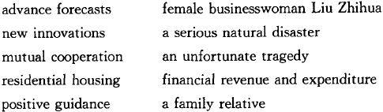
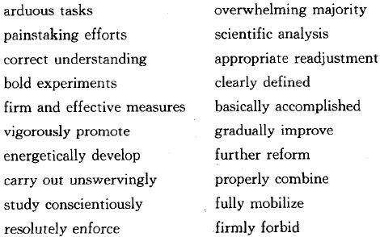

For our purposes, these can be divided into five categories:
1. redundant modifiers
2. self-evident modifiers
3. intensifiers
4. qualifiers
5. clichés
Let us examine them in turn.
Many adjectives and adverbs that are carried over into translations from the Chinese originals are simply redundant in English. That is, their sense is already contained or implied in the word they modify or in some other element of the sentence. Including them in the English version adds nothing but a useless duplication.
a) Obvious redundancies
Following are some obvious examples—all of which, incidentally, have appeared in print in Chinese publications:

Here are some more. As in Chapter I, in each example A-version is the original translation, B-version is the suggested revision, and any comments are given in brackets.
A: that theory too is a valuable ideological treasure of the Party
B: that theory too is an ideological treasure of the Party
[A treasure is valuable by definition.]
A: quadrupling GNP will provide a new starting point from which, in another 30 to 50 years, we shall approach the level of the economically developed countries
B: quadrupling GNP will provide a new starting point from which, in another 30 to 50 years, we shall approach the level of the developed countries
[The term "developed countries" means those that are developed economically (not necessarily in other ways).]
A: Singapore will bar America's popular female pop star Madonna from staging a show in its territory
B: Singapore will bar America's pop star Madonna from staging a show in its territory
[She wouldn't be a star if she were not popular, so "popular" is unnecessary. (Another objection is that it repeats "pop," which here means "popular music.") And to Western readers, even those who might never have heard of the performer, "female" is redundant with the universally recognizable feminine name "Madonna" (Italian for "my lady" and commonly used in Christian religion and art to refer to the Virgin Mary).]
A: the Chinese government took all possible eventualities into account when it made this policy decision
B: the Chinese government took all eventualities into account when it made this policy decision
[An "eventuality" is a possible occurrence. "All eventualities" therefore means "all possible occurrences."]
A: Chiang was able to complete the all-round encirclement of the Central Soviet Area after having defeated the Fujian People's Government
B: having defeated the Fujian People's Government, Chiang was able to complete the encirclement of the Central Soviet Area
[A completed circle is necessarily "all-round.”(The change in structure clarifies the logical connection between the two events: because Chiang had defeated... he was now able to complete.... )]
b) Adverbs of time
One kind of redundant modifier that often appears in Chinglish is the adverb indicating the time of an action. We noted in Chapter I that the noun phrases expressing time ("at present," "in the future," and "in the past") are usually superfluous in English, where their function is served by the tense of the verb. The same is true of adverbs expressing time:
A: now the government is working hard to improve taxation
B: the government is working hard to improve taxation
A: previously we used to overemphasize the need for class struggle
B: we used to overemphasize the need for class struggle
c) "Various "
Another redundant modifier typical of Chinglish is the adjective "various."Again, we saw in Chapter I that the noun phrases "a series of," "all sorts of," and "various kinds of" do not generally need to be carried over in translation. While in Chinese they are often necessary to indicate a plural, in English the plural is shown by the form of the noun ending in-s. "Various" is usually superfluous for the same reason:
A: more and more of our various construction projects require the efforts of the intellectuals
B: more and more of our construction projects require the efforts (or : assistance, or : collaboration) of intellectuals
A: hundreds of transnational firms have started various businesses in China
B: hundreds of transnational firms have started businesses in China
d) Other examples
It is not hard to find plenty of other redundant modifiers. Here is a sampling:
A: with the final completion of construction, the plant will reach an annual capacity of 100, 000 medium-size trucks
B: with the completion of construction (or, better : when
construction is completed), the plant will have an annual
capacity of 100, 000 medium-size trucks
[Completion is final by definition.]
A: imports of foreign automobiles have declined sharply this year
B: imports of automobiles have declined sharply this year
[You cannot import a domestic product.]
A: the long-term stability and prosperity of Hong Kong will be assured as long as China widely unites the Hong Kong people from all walks of life
B: the long-term stability and prosperity of Hong Kong will be assured as long as China unites the Hong Kong people from all walks of life
[The phrase "from all walks of life" by itself indicates that the unity is to be "wide."]
A: they must also have some necessary knowledge about history and geography
B: they must also know something about history and geography
[-"Must have" means that it is necessary.
-(Review : "Have knowledge" is one of those "unnec. verb + noun" phrases discussed in Chapter I. In the revision, it was changed to a plain verb, "know.”)]
A: We should continue to take measures to further improve regular education, adult education, and on-the-job training programs.
B: We should continue to improve regular education, adult education, and on-the-job training programs.
[-"Continue" to improve = "further" improve.
-(Review : "Take measures to improve" = unnec. verb + unnec. noun + third word, which is the true verb, "improve."In the revision, the unnecessary introductory phrase "take measures to" was dropped. )]
These, while not strictly redundant with another word, are still superfluous because the information they provide can be taken for granted. We have already met the first two of the following examples in Chapter I.
A: these nine years constitute a period in which the national economic strength has increased
B: in these nine years the economy has grown stronger
[-Unless otherwise stated, "the economy" means the national economy.
-(Review: "Constitute a period" adds nothing to the sense of "nine years" and is therefore unnecessary. )]
A: departments of scientific research should take steps to make a proper readjustment of...
B: departments of scientific research should readjust...
[-We can take it for granted that the readjustment should be "proper."
-(Review : "Make a readjustment" is another unnec. verb + noun combination that can be replaced by a plain verb, "readjust.""Take steps to," like "take measures to" above, is an unnec. introductory phrase that can be omitted entirely. )]
A: we should appropriately raise the purchasing prices of grain and cotton, so as to increase the income of the peasants considerably
B: we should raise the purchasing prices of grain and cotton, so as to increase the income of the peasants considerably
[We should always do everything "appropriately," just as we should always "do a good job."]
A: the Congress elected a new leading body, ensuring adequate continuity for our policies of reform and opening to the outside world
B: the Congress elected a new leading body, ensuring the continuity of our policies of reform and opening to the outside world
[Clearly, "continuity" here means "adequate" continuity.]
A: the editorial notes that in 1992, China will open wider to the outside world and do an even better job in running the five special economic zones, as well as the new Pudong development zone in China's leading industrial city of Shanghai
B: the editorial notes that in 1992, China will open wider to the outside world and do an even better job of running the five special economic zones, as well as the new Pudong development zone in the leading industrial city of Shanghai
[It can safely be assumed that even foreign readers know what country Shanghai is in.]
Intensifiers are adjectives (like "serious" and "great") or adverbs (like "extremely" and "certainly") that are intended to heighten the effect of the words they modify. They should be looked upon with suspicion: more often than not, an English text is better off without them.
a) Intensifiers with weak words
Sometimes an intensifier is used to modify a weak or inadequate word in the hope of increasing its power. In English, this is a mark of the inexperienced writer.
A skilled writer will try to find, in the rich vocabulary the language has to offer, a strong, precise word that by itself will convey the meaning of both the intensifier and the weak word. Thus, instead of "extremely important," he or she might say"essential," "imperative," "vital," "indispensable," or "crucial" ; instead of "they absolutely wanted to," the translator might choose "they were determined to," "had resolved to," "were bent on," or "insisted upon."
More examples:
A: the people have a strong aversion to graft, bribery, embezzlement, and other dirty practices
B: the people detest graft, bribery, embezzlement, and other dirty practices
A: I think there will definitely be genuine stability and unity
B: I am certain that there will be genuine stability and unity
A: I firmly believe that our army will be able to steadfastly maintain its own character
B: I am convinced that our army will be able to (steadfastly) maintain its own character
A: I can surely tell you that nobody is able to stop the reform and opening up in China from continuing
B: I can assure you that no one can stop China's reform and opening to the outside world
A: the KMT government overestimated its own strength and was thoroughly optimistic as to the outcome of the war
B: the KMT government overestimated its own strength and was confident of the outcome of the war
b) Intensifiers with strong words
It is bad enough to use an intensifier to shore up a weak word, as in the examples just given. It is worse to use one to support a word that can stand perfectly well alone. Such a word gives full expression to the writer's thought, and the intensifier adds nothing to its meaning. That is, the modifier is redundant, like those in the first category.
The classic example of this is the combination "great historic," as in "great, historic contributions," "an event of great, historic significance," and so on. Both Professor Cheng Zhenqiu and Sol Adler—two distinguished scholars and longtime students of translation—have criticized this usage. Professor Cheng [p. 44] gives "a great, historic victory" as an example of a phrase in which the Chinese modifier ("great"), if retained in the English translation, "would be redundant and would weaken the effect."Sol Adler [p. 17] put it like this: "The word 'historic' is so strong in English that if you say 'This is a historic change, ' there's no need to say it's 'great. ' By definition it's great. 'Historic' already contains implicitly in it the idea of greatness."
The same logic condemns many other combinations in which the idea expressed by the intensifier is "implicitly contained" in another word. Consider the following:
From the Far Eastern Economic Review, quoting Deng Xiaoping:
A: if there is serious chaos in Hongkong, the Chinese government would be forced to reconsider...
B: if serious disturbances occurred in Hong Kong, the Chinese government would then be compelled to reconsider...
["Chaos" is very strong in English: it means a state of utter confusion in which nothing is organized or predictable. In politics, such a condition is necessarily "serious."]
A: "all this conduct has severely damaged the reputation of the medical profession and must be firmly banned," the minister said
B: "all this conduct has severely damaged the reputation of the medical profession and must be banned," the minister said
[To ban something is to prohibit it, to make it illegal in the English sense of "against the law."It is by definition a "firm" action.]
A: the Civil Aviation Administration of China strongly demanded that the Taiwan authorities take all measures possible to secure the safety of the plane and its passengers
B: the Civil Aviation Administration of China demanded that the Taiwan authorities take all measures possible to secure the safety of the plane and its passengers
[A demand is a firm, even imperative request: it is strong by definition.]
A: these practices should be totally abolished
B: these practices should be abolished
["Abolish" already contains the idea of "totally" ; you can't abolish something partially. The same is true of such expressions as "thoroughly eliminated," "completely smashed," and "totally destroyed.”]
A: during the entire process of reform and opening, we must persistently oppose corruption
B: throughout the process of reform and opening, we must combat corruption
["Persistently" is redundant with "during the entire" (which can be neatly replaced by "throughout").]
And although they have been consecrated by long usage, we should place in the same category:
A: the broad masses of the people
B: the masses
[The masses are necessarily "broad"—there are no "narrow" masses. (And since "the masses" = "the people," we can eliminate one or the other as well. )]
A: a tiny handful of troublemakers
B: a handful of troublemakers
["A handful" is a metaphor for a very small number. As with "broad masses," "serious chaos" etc., the opposite formulation, "a large handful of troublemakers," would be a contradiction in terms.]
c) Common redundant intensifiers
In any translation that has not been well edited, either by the original translator or by a polisher, a practiced eye will light upon a great number of redundant intensifiers. An informal count suggests that the following are the most common:
* active/actively
A: active efforts should be made to develop small-scale mining
B: efforts should be made to develop small-scale mining
[Efforts are active by definition: you can't make an inactive effort.]
A: I think we should actively promote the establishment of a new international political and economic order
B: I think we should promote the establishment of a new international political and economic order
[-"Actively" is redundant because you can't promote anything passively.
-If emphasis is wanted, it should be provided by other means: "we should vigorously promote," "make every effort to promote," "use all means to promote," "do everything possible to promote," or the like.]
* effective/effectively
A: to benefit the people by means of an effective control of the Yellow River
B: to benefit the people by controlling the Yellow River
[Control is not control unless it is effective.]
A: we should effectively protect the legitimate rights and interests of foreign investors
B: we should protect the legitimate rights and interests of foreign investors
[To protect something means to protect it effectively.]
* actual (true, real)/actually (truly, really)
A: the people's procuratorates must always pay attention to actual facts
B: the people's procuratorates must always pay attention to facts
[A fact is "actual" ("true," "real") by definition. If not, it is not a fact.]
A: he devised tactics for battle according to the actual situation
B: he devised tactics for battle according to the particular situation
[-The point here is that each situation is different and that he devised tactics to match the "particular" one he was facing. A situation, like a fact, is always "actual" ("true," "real"), so there is no need to say so.
-Note that the same goes for "circumstances" and "conditions," which are also objective realities needing no certification by an adjective.]
* successful/successfully
A: to successfully accomplish the arduous and complicated tasks defined at this congress...
B: to accomplish the arduous, complicated tasks defined at this congress...
[To successfully accomplish = to succeed in accomplishing = to accomplish.]
A: we should keep in mind the days when scientists of the older generation successfully developed the atomic and hydrogen bombs
B: we should keep in mind the days when scientists of the older generation developed the atomic and hydrogen bombs
[If they developed the bombs, they were successful.]
d) Effect of intensifiers
Another problem with intensifiers is that, redundant or not, their effect is not always the one intended. Sometimes they produce an overemphasis that is unacceptable in English. For example, it is overdoing it to say that "all social circles are tremendously enthusiastic about providing education.”"Enthusiastic" is emphatic enough: the adverb is simply excessive.
At other times, instead of making a statement too strong, an intensifier only weakens it. If we say, for example, "historical experience has proved that... ," the reader tends to accept the statement as fact. But if we say, "historical experience has convincingly proved that... ," the reader's suspicions are aroused. "Evidence" may or may not be convincing, but "proof" is convincing by definition. The unadorned verb is stronger.
A notable example of this principle of English appears in the First Amendment to the Constitution of the United States: "Congress shall make no law respecting an establishment of religion, or prohibiting the free exercise thereof... ."
The men who drafted that amendment more than two hundred years ago did not say "Congress shall absolutely make no law," or "Congress shall definitely make no law," or Congress shall resolutely refrain from making any law... ."They understood that the unmodified statement was absolute and that, for future generations, its power would lie precisely in its simplicity.
Here are some examples from Chinglish sources:
A: we are confident that we shall assuredly surpass imperialism through peaceful competition
B: we are confident that we shall surpass imperialism through peaceful competition
A: I am deeply convinced that the normalization of Sino-Japanese relations can certainly be realized
B: I am deeply convinced that Sino-Japanese relations can be normalized
[Review: To realize the normalization of = to normalize (unnec. verb + noun replaced by a plain verb).]
A: we cannot endure turmoil and whenever we encounter it later we will definitely enforce martial law
B: we cannot tolerate turmoil, and whenever it arises we will enforce martial law
[-If more emphasis is needed to match the effect of the Chinese, it could be provided, for example, by saying: "we are determined to enforce martial law."
-(Note that the adverb "later" is unnec. with a verb in the future tense, "will enforce.")]
A: their speech is very dull and meaningless
B: their speech is dull and meaningless
A: the people's living standards are truly rising, the country is thriving, and China's international prestige is genuinely growing
B: the people's standard of living is rising, the country is thriving, and its international prestige is growing
[If "rising" has to be supported by "truly," and "growing" has to be confirmed by "genuinely," how can we be sure that "thriving" by itself really means "thriving" ? Each of the verbs is more convincing when it stands alone.]
e) Advice from the experts
It is safe to assume that the British and American authors of current handbooks for writers have never heard of Chinglish. Nevertheless, their advice on unnecessary intensifiers is so relevant to the work of translators and polishers in China that it might have been addressed specifically to them. Here is a sampling:
-William Zinsser [pp. 109－110]: Most adverbs are unnecessary. You will clutter your sentence and annoy the reader if you choose a verb that has a precise meaning and then add an adverb that carries the same meaning.... Again and again in careless writing, strong verbs are weakened by redundant adverbs.
-Claire Cook [pp. 15－16]: You probably should delete all intensive adverbs—very, really, truly, actually, and the like. If you've chosen the right word, adding a very defeats your purpose. If you haven't got the right word, the very offers poor compensation. Readers pay no attention to this overused word. If you want to put a very in front of a large, you should consider substituting enormous, huge, gigantic, or massive .... [The intensive adverbs] attenuate rather than strengthen. Consider really terrific, absolutely stunning, truly sensational, extremely vital, and very devastating. The adverbs reduce powerful adjectives to conversational gush, depriving them of their stark force. Almost all writers succumb to these trivializing intensives. Be on guard.
-Lauren Kessler and Duncan McDonald [pp. 117－118]: When you intensify an already intense word, be it adjective or verb, you do more than add clutter. You sap the word of its strength. Once you have chosen a powerful word, you must trust it to stand on its own....
-H. W. Fowler [p. 10]: Constant association with an intensifying adjective deprives a noun of the power of standing on its own legs. Thus danger must always have its real, part its integral, and crisis its grave or acute, and understatements must be masterly. The only hope for a noun thus debilitated is for the combination to be recognized as a cliché and killed by ridicule....
-Ernest Gowers [pp. 50, 52]: Cultivate the habit of reserving adjectives and adverbs to make your meaning more precise, and suspect those that you find yourself using to make it more emphatic. Use adjectives to denote kind rather than degree. By all means say an economic crisis or a military disaster, but think well before saying an acute crisis or a terrible disaster. Say if you like 'The proposal met with noisy opposition and is in obvious danger of defeat'. But do not say 'The proposal met with considerable opposition and is in real danger of defeat'. If that is all you want to say it is better to leave out the adjectives and say 'The proposal met with opposition and is in danger of defeat'.... Strong words like urgent, danger, crisis, disaster, fatal, grave, overriding, prime, paramount, and essential lose their force if used too often. Reserve them for strong occasions, and then let them stand on their own legs, without adjectival or adverbial support.
-Jacques Barzun [p. 100]: An important subclass of clichés consists of what an English rhetorician [Gowers] has called "adverbial dressing gowns" : seriously consider, utterly reject, thoroughly examine, be absolutely right, make perfectly clear, sound definitely interested. All these are clichés and the adverb is the dressing gown: the writer thinks the verb or adjective would not seem decent if left bare. The truth is that the meaning is strengthened by the removal of the automatically remembered adverb. Nothing is easier than to strike it out when it crops up unbidden in your prose. Reread yourself and you will feel how much more firm the tone and final the thought of "I reject the accusation" than the spluttering: "I utterly reject the accusation."
Qualifiers are adverbs designed not to intensify the force of a statement but to lessen it. They are words like "quite," "rather," and "relatively."
There is nothing wrong with using such words on occasion, when the bald statement would be too absolute without some qualification. However, when qualifiers are used indiscriminately, as they often are in Chinglish, they give the reader an impression of hesitancy, timidity, and indecisiveness, as if the writer were unable or unwilling to commit himself to anything definite.
The leading Party cadre who described a forthcoming history of the CPC as "a reasonably substantial book giving a comparatively complete history of the Party" meant to praise it. His Chinese readers doubtless understood that. But to anyone who reads his comment in English translation, he appears so reluctant to express wholehearted approval of the work that his words are only a lukewarm recommendation at best. In Alexander Pope's famous phrase, he seems to "damn with faint praise."
a) Examples
Here are more examples of qualifiers that weaken the writer's statement when there is no logical reason for doing so:
A: we have dozens of thousands of students studying abroad, and it is quite important to create suitable conditions for their work after they come back
B: we have tens of thousands of students studying abroad, and it is important to create suitable conditions for their work after they return
[-There is no need to hang back from saying straight out that this is important; that is clearly what the speaker means.
-("Dozens of thousands" was changed simply because it is not idiomatic in English. )]
From a Reuters dispatch printed in the Boston Globe:
A: Chinese officials voiced shock yesterday at a decision by the US Export-Import Bank to delay loans for a subway project for the southern city of Guangzhou.... "The impact of this will be quite huge," an official said by telephone.
B:... "The impact of this will be huge," an official said by telephone.
[If the officials "voiced shock," they plainly thought the decision would have an enormous impact. "Quite" saps the meaning of "huge."]
A: “[artist] Zhao's images are somewhat primitively aggressive, forcing themselves on the viewer as if they, together with the strong feelings they convey, must never be ignored and overlooked," critic Geng Jian comments on his art
B: "Zhao's images are primitively aggressive," says critic Geng Jian, "forcing themselves on the viewer as if they, and the strong feelings they convey, were not to be ignored"
[-Here the qualifier is at war with the meaning: if the images were only "somewhat" aggressive, they could not "force themselves" upon us.
-(Note that in this context, "overlooked" simply duplicates the sense of "ignored.")]
A: under the most difficult circumstances, Zhou Enlai resolutely and carefully set to work, basically guaranteeing the peaceful resolution of the Xi'an incident
B: under the most difficult circumstances, Zhou Enlai carefully set to work, guaranteeing (or: ensuring, or: bringing about) the peaceful resolution of the Xi'an incident
[-Premier Zhou's diplomatic efforts did indeed bring about the peaceful resolution of the Xi'an incident, so "guaranteeing" needs no qualification.
-"Resolutely" is an unnecessary intensifier and a cliché; it is particularly undesirable in the same sentence with "resolution," which repeats the sound.]
A: I do not think that that part of history [the Cultural Revolution], a fairly significant part of our lives for my generation, has gone with the wind
B: I do not think that that part of history, which for my generation was a significant part of our lives, has gone with the wind
[The writer, born in 1952, is speaking of a "part of history" that transformed the lives of young people of her generation and marked many of them profoundly. To refer to it as "fairly significant" is a needless understatement that only undercuts her following remarks about its importance.]
b) "Perhaps," "maybe," "possibly "
In this same category of qualifiers, there are three—"perhaps," "maybe," and "possibly" (or "possible")—which, even when they are perfectly legitimate, are often unnecessary. They can be neatly replaced by "may" or "might."In other words, the doubt expressed in Chinglish by one of these modifiers is commonly expressed in English by a special form of the verb.
A: perhaps it will take a decade to accomplish this
B: it may take a decade to accomplish this
A: twelve to thirteen percent of China's people, or more than 100 million of the total, live in cities, and maybe the figure will go up in coming years
B: twelve to thirteen percent of our people, or more than 100 million, live in cities, and that figure may go up in years to come
A: experts predict that the reduction of interest rates will lead to a possible loosening of credit this year
B: experts predict that the reduction of interest rates may lead to a loosening of credit this year
c) Comments by the experts
Unnecessary qualifiers, like unnecessary intensifiers, are unanimously condemned by the writers, editors, and scholars who have a professional concern for the English language.
-Gowers [p. 51] cites unduly , relatively , and comparatively as the most fashionable "adverbial dressing-gowns," pointing out that those words "can only properly be used when something has been mentioned or implied which gives a standard of comparison."When there is no standard of comparison, "their use is merely a shrinking from the nakedness of an unqualified statement."
-Strunk and White [p. 73] call qualifiers like rather and a little "leeches that infest the pond of prose, sucking the blood of words."
-And the Fowler brothers, writing in 1906 [p. 363], refer to the indulgence in qualifying adverbs (perhaps , possibly , probably , rather , a little , somewhat , and so on) as a disease of British journalists. They deplore the "intemperate orgy of moderation" that they find renewed every morning in the daily newspapers.
Here again, although the remarks are addressed to writers who are native speakers of English, they apply with equal force to Chinese translators who are working into English as a second language.
Clichés are the most troublesome category of unnecessary modifiers in Chinglish. This category overlaps all the others: it consists of adjectives and adverbs which, while they may or may not be objectionable for one of the reasons discussed above, are so overworked that they have become nearly meaningless. They are used with such regularity to accompany certain words that those words are seldom found standing alone.
a) Examples
Translators and polishers at units that deal with official reports and speeches are only too familiar with the following formulas, lifted straight out of the Chinese:

Staff members at other units could no doubt compile similar lists of clichés found in the particular texts with which they work.
b) Effect of repetition
Professor Cheng Zhenqiu [p. 47] suggests that the Chinese language tolerates more adjectives and adverbs than the English. Referring to a government report thick with relentlessly repeated modifiers, he warns that "if all [of them] are translated literally into English, the effect would be deadening. Too much emphasis means very little emphasis."
This problem of the "deadening effect" often arises in English versions of political documents. When all tasks are "arduous," when it is "imperative" to perform them all, and when we are constantly exhorted to execute them "conscientiously," "diligently," "resolutely," "energetically," "vigorously," "unswervingly," "persistently," and "unremittingly," the reader, exhausted at the end of the first page, mentally throws up his or her hands and stops listening.
For the native reader of English, the meaning of such ubiquitous adjectives and adverbs grows fainter with each repetition. At last they degenerate into familiar background noises, like the Beijing street sounds that accompany a cyclist's stream of thought without intruding upon it.
In other words, these overworked modifiers have met the same fate as the overworked verb phrases discussed in Chapter I: "make great efforts to," "pay attention to," and "do a good job in."They have been used so often that they have lost all power of persuasion. Thus, when they are needed for a legitimate purpose, the translator finds them too enfeebled to serve.
c) Avoiding repetition
The easiest way to deal with a cliché modifier is simply to omit it from the English version. That is often a perfectly acceptable solution. Sometimes, however, when the word cannot be deleted without diminishing the meaning of the original, a fresh variation is enough to relieve the monotony. For a change, an "arduous" task might be described as "demanding.""Vigorous" development might be called "intensive.""Further" efforts could be changed to "renewed." And "resolute" measures could be made "determined."(In the search for alternative renderings of this sort, Roget's International Thesaurus or another dictionary of synonyms is often helpful. )
Plainly, you should try to steer clear of weak and colorless modifiers like "very" and "fully," which have been overused in innumerable pieces of writing. They have long since succumbed to the process of deterioration and have become empty clichés. But it should be remembered that even a forceful and unusual word, if it appears too often in any one text, can quickly be reduced to the same impotence.
For example, in the draft translation of the first volume of the Selected Works of Zhou Enlai, the pieces dating from the 1920s and 1930s were full of references to "rampant" reaction and "frenzied" enemy attacks. Concerned about the constant repetition of such striking adjectives, the two English-language polishers did their best to delete or change them where possible. They also made it a rule that the strong adverb "resolutely" was to be allowed no oftener than twice a page, lest it lose its force (a rule that they were not always able to abide by).
We have now examined the five main types of unnecessary modifiers in Chinglish: redundant modifiers, self-evident modifiers, intensifiers, qualifiers, and clichés. From this discussion, it is clear that no adjective or adverb should be automatically included in the English version of a text simply because its equivalent appears in the Chinese. But, let us hasten to add, neither should it be automatically eliminated.
In Chapter I we saw that a noun or verb that is usually superfluous can nevertheless be useful at times. The same is true of adjectives and adverbs. In each instance, a judgment must be made. Is the modifier necessary? Should it be carried over into English? Should it be replaced, along with the noun or verb it modifies, by a single, more expressive word? Or should it simply be edited out?
Confronted with a modifier of the first category, you need not hesitate:
1. Redundant : new innovations = innovations.
But modifiers in the other categories often require more consideration. Here are examples from each in which, for one reason or another, it was decided that a word that is generally dispensable should nevertheless be retained:
2. Self-evident : he called for... further reform efforts to push State cultural organizations and performing art troupes into the marketplace
[-The Minister of Culture is calling for additional efforts, so here the "further" seems justified.
-When, however, in the next few sentences he also calls for "more cultural events to further boost the market" and vows to "further improve the management of the cultural market," the word adds only an idea that can be taken for granted, and it should therefore be cut.]
3. Intensifiers : the complete prohibition and thorough destruction of nuclear weapons
[Here political considerations intervene. It is probably better to tolerate the redundancy than to correct it at this late date, when, as Professor Cheng Zhenqiu has warned, a change in wording might be interpreted abroad as a change in China's long-standing policy.]
4. Qualifiers : looking back to the war years, I should say that our Second Field Army accomplished its tasks fairly well at every stage of the war
[Although "fairly," like "quite," "rather," and "somewhat," usually expresses only unnecessary hesitation, here it is a deliberate understatement. The speaker is Deng Xiaoping, and he is referring in particular to the heroic Dabie Mountains campaign, which he himself had commanded together with Liu Bocheng. The intentional modesty of the remark would be lost if the qualifier were eliminated.]
5. Clichés : Jiang said that the central idea running through Deng Xiaoping's remarks was the need to carry out unswervingly the Party's basic line of "making economic construction the central task and adhering to the four cardinal principles . . ."
[This is a public pronouncement by Jiang Zemin speaking in his capacity as General Secretary of the Party. Better to keep his emphasis, even if it means retaining an overworked adverb.]
In sum, given the markedly different habits of the Chinese and English languages with regard to modifiers, it behooves you to examine each one critically before deciding how to deal with it.
Here are twenty more examples of sentences containing unnecessary words, together with proposed revisions. This time it is the superfluous modifiers that are underlined in the A-versions. Again, explanations of the revisions are given in brackets. Remarks on unnecessary nouns and verbs that were also removed appear in parentheses and are marked "Review ."
1) A: however, these troops, which were what remained after severe tempering, were the valuable cream of the Communist Party of China and the Red Army
B: however, these troops, which were what remained after severe tempering, were the cream of the Communist Party and of the Red Army
[-The metaphor "cream" means the best or most valuable part, so "valuable" is redundant.
-"Of China" is understood.]
2) A: some people are worried whether China will abide by the agreement consistently
B: some people are worried whether China will abide by the agreement
["To abide by" means to remain faithful to. That is, it implies the idea of always or consistently.]
3) A: the decision also clearly set forth the basic principles, policies, and measures for the rectification
B: the decision also set forth the basic principles, policies, and measures for the rectification
[We assume a statement (explanation, definition etc. ) is clear unless there is some reason to doubt it.]
4) A: the current great peril facing the whole country and the entire nation was brought on by the erroneous policy pursued by the KMT, which must be thoroughly revised
B: the great peril facing the entire nation was brought on by the erroneous policy pursued by the KMT, a policy that must be reversed
[-The sense of "current" is clear from "facing."
-The "entire" nation was retained, because in this context it was important, but "the whole country" seemed redundant.
-"Thoroughly revised" was replaced by a single strong word, "reversed."The word was justified because it was clear from the context that the KMT must do the opposite of what it had been doing.]
5) A: the editorial calls on the Chinese people to fully implement the CPC's basic line, deepen reform and further opening to the outside, so as to further push forward the political, economic, and social development of the country in a steady way
B: the editorial calls on the Chinese people to implement the basic line of the CPC, deepen the reform, and promote the opening to the outside, so as to steadily push forward the political, economic, and social development of the country
[-"Fully" is unnec. because its sense can be taken for granted: policies should always be fully carried out.
-If the word conveys something more specific in Chinese, that must be spelled out for the reader of English. We might say, for example, "to implement the CPC's basic line in all its aspects," or "in every respect."
-As for "further," it is obvious that at this point in history, any push given to development will be a "further" push (not the initial push).
-The repetition of "further" in A-version is particularly undesirable because the word is used in two different senses. It appears first as a verb ("to further opening"), then immediately after as an adverb ("to further push ahead"), so that the reader is obliged to go back and read the sentence again in order to make sense of it.]
6) A: we shall continue to effectively prevent and treat plant diseases and insect pests and spread the use of improved strains and advanced, suitable techniques
B: we shall continue to prevent and treat plant diseases and insect pests and to spread the use of improved strains and advanced techniques
[-Unless you prevent diseases "effectively," you do not prevent them.
-We can take it for granted that techniques used should be "suitable" (which means no more than "appropriate," "proper," etc. ). If the sense of the Chinese is that the techniques should be "suited to local conditions," we should say that.]
7) A: the land reform conducted across this vast area represented a tremendous social transformation unparalleled in Chinese history
B: the land reform conducted across this vast area represented a social transformation unparalleled in Chinese history
["Unparalleled" is so strong that there is no need for the intensifier "tremendous."Cf. "great historic."]
8) A: according to the record, the population of the city of Nanjing had dropped drastically by 80 per cent after the Japanese occupation
B: according to the record, the population of the city of Nanjing had dropped by 80 percent after the Japanese occupation
[In this context, 80 per cent is in itself a "drastic" figure, so the adverb is redundant.]
9) A: The efforts to further deepen reforms, accelerate readjustment of the economic structure, and constantly promote scientific and technological progress and improve economic performance are all focused on the objective of effectively strengthening the vitality of large and medium-sized state-owned enterprises.
B: The efforts to deepen reforms, accelerate readjustment of the economic structure, promote scientific and technological progress, and improve economic performance are all designed to revitalize large and medium-sized state-owned enterprises.
[-This was written in 1992. By then, any efforts to deepen the reforms initiated in 1979 were clearly "further" efforts.
-It can be taken for granted that the efforts to do all these things are "constant."
-"Effectively" is a redundant intensifier.
-(Review : "The objective of" = unnec. category noun. "Strengthen the vitality of" = unnec. verb + noun, here replaced by the plain verb "revitalize.")]
10) A: the situation was fairly grim and perilous for us, but on the whole, I should say we accomplished our task of strategic counteroffensive quite smoothly
B: the situation was perilous, but on the whole, I should say we accomplished the strategic counteroffensive smoothly
[-This is again Deng Xiaoping speaking about the Dabie Mountains campaign in which he himself played a leading role. The translator will therefore want to retain the modesty of the statement, but "on the whole" is a sufficient qualifier, obviating the need for "quite."
-"Fairly," on the other hand, is plainly an unnecessary understatement.
-"Grim" was deleted as a mere duplication of "perilous."
-(Review : "Our task of" was omitted as an unnec. category noun. )]
11) A: [Liu] Bocheng firmly supported the Party's policy of marching north to resist the Japanese invaders and resolutely opposed Zhang Guotao's activities to split the Party and the Red Army
B: Bocheng firmly supported the Central Committee's policy of marching north to resist the Japanese invaders and opposed Zhang Guotao's attempts to split the Party and the Red Army
[-"Resolutely" was omitted on the principle that one should eliminate an overworked modifier whenever it serves only decorative purposes.
-Another consideration was that "firmly" and "resolutely" mean virtually the same thing and, used together in the same sentence, produce overemphasis.]
12) A: we must resolutely shift the emphasis of construction to technological transformation
B: we must shift the emphasis of construction to technological transformation
[-The adverb seemed to have been included only because there was one in the Chinese. Emphasizing technological transformation is not a task that calls for special resolve.
-Again, better to save the word for a place where it is necessary and more appropriate.]
13) A: effective measures must be taken to bring the number of various mentally ill persons under control
B: measures must be taken to bring the number of mentally ill persons under control
[-If the measures bring the number under control, they are necessarily effective.
-"Various persons" is meaningless here, and the adjective seems to have been automatically carried over from the Chinese where, presumably, it was needed to indicate a plural.]
14) A: first, seize the favorable opportunity and actively create conditions to seek a faster and better development speed
B: first, seize the opportunity to create conditions for faster and better development
[-An opportunity is by definition an opportune or "favorable" occasion.
-The notion of "actively" is implicit in "create."
-(Presumably, the revised version reflects the intended meaning. "Better" must apply to "development" rather than "speed" ; it is hard to think what a "better" speed could be if not a "faster" one. )]
15) A: the people as a whole are strongly dissatisfied with the phenomena of serious bureaucratism and corruption
B: the people are indignant over (or: outraged by) bureaucratism and corruption
[-"The people" means all or most of the people, so "as a whole" was dropped.
-A single strong word, "indignant," was used to replace the combination of intensifier + weak "dissatisfied" .
-The people would not be indignant unless the problems were serious, so the adjective was omitted as self-evident.
-(Review : "The phenomena of" = unnec. category noun. )]
16) A: all members of the Party should conscientiously , actively , and gladly plunge into the reform
B: all members of the Party should plunge eagerly into the reform
[-"Actively" was deleted as being redundant with "plunge."
-It was felt that the sense of both "conscientiously" and "gladly" could best be expressed in the single word "eagerly."(It might also be argued that in this context "plunge" alone implies eager, voluntary action. )]
17) A: successful handling of the two above-noted problems [relating to the minority nationalities] is a responsibility that rests largely with the State organs and government departments concerned
B: the responsibility for handling these two problems rests largely with State organs and government departments
[-Their responsibility is to handle the problems; it is understood that they are to try to handle them successfully—that is, to "do a good job."
-"Concerned" was deleted as redundant with "responsibility."In A-version all we have said is that the responsibility rests with those who are responsible for it.
-It is possible that a different sense was intended, one in which "concerned" was not merely redundant. In that case, we would have to spell out its meaning: "the responsibility for handling these two problems rests largely with those State organs and government departments that are concerned with the minority nationalities."]
18) A: after completing their preparations for war, the KMT authorities immediately revealed their true nature and tore up the truce agreement by flagrantly launching an all-out attack on the Liberated Areas
B: as soon as they had completed their preparations for war, the KMT authorities revealed their true nature and their contempt for the truce agreement by launching a full-scale attack on the Liberated Areas
[-We can dispense with "immediately" by combining it with "after" in the phrase "as soon as."
-"Flagrantly" is a wrong collocation with "launching" (although we might have said "in flagrant violation of the truce agreement"). It can be neatly replaced by "contempt," which includes both the meaning of the metaphor "tore up" and the writer's indignation as expressed in the adverb.]
19) A: in the letter [to the KMT] the CPC earnestly stated, "We want to form a solid, revolutionary, united front with you . . ."
B: in the letter the CPC stated (or: declared), "We want to form a solid, revolutionary, united front with you . . ."
["Earnestly," like "sincerely，" can be taken for granted. If the point needs to be emphasized here, a solution would be "the CPC declared in good faith."]
20) A: through three years of hard effort, Jiang noted, the tasks of rectifying the economy have basically been completed
B: through three years of hard effort, Jiang noted, the rectification of the economy has basically been completed
[-In this instance, the qualifier seems necessary. It would scarcely be correct to say that so enormous and open-ended a task as "rectifying the economy" had been completed in so short a time.
-(Review : "The tasks of" = unnec. category noun. )]
Here are twenty examples for you to edit. It may help to underline all the modifiers in each sentence and then decide which ones to retain and which to delete. Again, suggested revisions are given in the key at the back of the book.
1) we discovered this long ago but were never able to successfully solve the problem
2) the General Secretary pointed out that to speed up the construction of the new economic system it is imperative to resolve several key problems currently
3) Beijing plans to make greater efforts to further improve sanitation conditions
4) the unchecked spread of bourgeois liberalization may have grave consequences
5) I believe that these policies will definitely not be changed
6) the reform and opening up must be carried out in light of the actual conditions in each country, because countries differ from one another in many respects
7) first, every year we must truly solve some of the intellectuals' problems, producing real results
8) we should have a sober view that there are still many defects yet to be wiped out
9) we shall continue to severely crack down on smuggling
10) we shall unswervingly follow a policy of opening to the outside world and actively increase exchanges with foreign countries on the basis of equality and mutual benefit
11) I believe that the unhealthy practices which can now be found in society will certainly decrease gradually and disappear eventually
12) the decree says the country firmly forbids import and export of rhinoceros horn and tiger bone and ready-made traditional Chinese medicines which include them
13) you can make suggestions to the responsible departments concerned for an extension of time
14) China will work to soundly implement the Uruguay Round of trade accords, a Beijing representative said on Wednesday
15) I hope you will sit down together to carefully study and discuss this question
16) however, it will be hard to avoid completely an occasional delay of ten to fifteen days
17) the Third Plenary Session of the Eleventh Central Committee defined the central task for the whole Party and the entire country as development of the productive forces
18) while there has been a significant and phenomenal increase in output, it has not solved the problem of fragmentation of production
19) in this way, we can seize the favorable opportunity to raise the national economy to a new level
20) agricultural growth remains the important foundation for the development of China's national economy as a whole